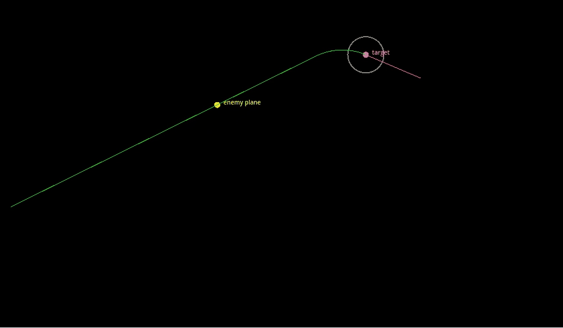
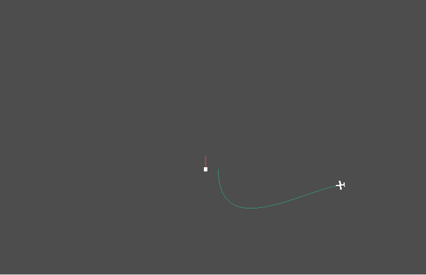
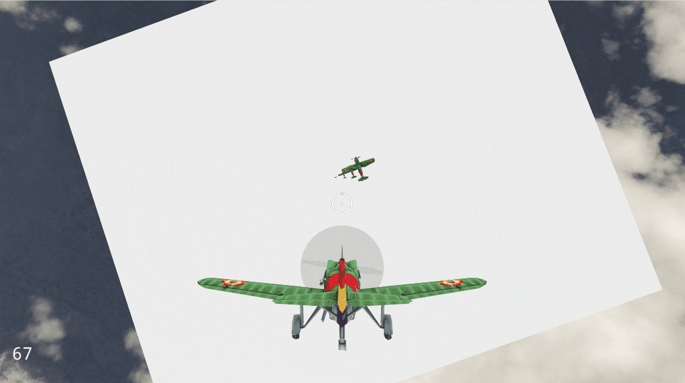

Development time: Solo, 1 month part-time (and counting)
Project type: Passion project
Description
I've always had a love for aerial combat games, especially those in the Battlefield and Ace Combat series. They're designed so differently from conventional gameplay, a lot of which stems from the inherent "whoa, I'm flying!" fun factor. I'm currently writing the narrative to the game, while prototyping combat mechanics and interactions.
Tooling
Debug Graph Tool
I wanted a way to visualize the relation between linear velocity and angular velocity. Because this is difficult with plain debug prints, I wrote a custom Godot add-on that plots data in a graph. This immediately helped me identify issues with sudden velocity jumps.
It integrates perfectly into the Godot editor, where it sits docked by default. After positive feedback online, I packaged it and published it on the Godot Asset Store!
An undocked Debug Graph in action, plotting the player's velocity against its angular velocity.
Enemy behaviour
Combat pillars
I take a few important pillars into account while designing enemy behaviour. They are based on target players' preferences and those of my own.
Intimacy The game focuses on one-on-one combat. The player chooses which target to tackle, and is free to switch between targets. Enemies never gang up on the player, even if there are a lot of them in the level.
Same rules The player should feel like they are outmaneuvering enemies on similar terms, that is, a similar turn radius, similar speeds, similar physics.
Always readable The player should always know where all enemies are and which direction they’re heading, through a combination of their visible model, contrails/smoke trails, UI.
Unique pathfinding challenges
In most games, pathinding simply means getting from point A to point B. But I want to be able to direct airplanes to a position, facing a certain direction. I tried two approaches:

Out of curiosity, I started out by treating it like a math problem. After some geometric maths trial and error, I found that "Dubins" paths are a solution, but only in 2D. 3D would make the logic too complex for me to write manually, but it did give me insight in how this type of pathfinding system could work.

Another approach I tried is using a spline. While more expensive, it's compatible with 3D out of the box, and looks more natural than Dubins paths. It has some downsides, such as constant overshooting thanks to asymptotic convergence. But I'm confident I can overcome those with code, so this is the approach I'll take for now.
Distance & speed problem
In Stratoforce, the player has to get quite close to an enemy to take it out. While testing I identified a dilemma:
If the player & enemies move slowly, all action is concentrated in a smaller area so there is less waiting and much more to see on-screen, but movement feels sluggish. (Battlefield 1)
If the player & enemies move fast, it makes movement much more visceral, but the player will have a very small window of attack before overshooting the enemy, and they are fighting far away dots most of the time. (Ace Combat)
A mix of the two results in worst of both worlds.

I tested a system where enemies further away are scaled up, to stay visible. Left: 0% effect, right: 100%. I've chosen to use it at a subtle 20%.
Distance scaling & wind shader effects in action, as well as the first iteration of spline based pathfinding.
Possible solutions
Right now I'm in the process of prototyping multiple solutions. So far I've tried:
Perspective negation by scaling up distant enemies
Screen space wind VFX to feel faster
This is just the beginning, and I'll research more flight games to see how they tackle this problem.
Right now everything is coming together nicely, and I'm on track to perform the first playtests very soon. Exciting!